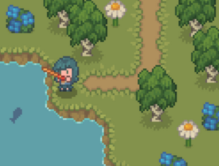
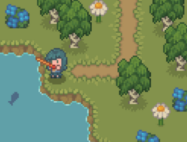

De game
Brandaan is een game gemaakt om kinderen uit groep 5 te helpen bij het leren over de geschiedenis.
Brandaan is een jongen die terug in de tijd reist met de tijdmachine van zijn vader.
Onderweg breekt de tijdmachine in 3 stukken en deze onderdelen worden over het land verspreid.
Als Brandaan weer terug naar zijn eigen tijd wil, zal hij alle onderdelen van de machine terug moeten vinden.
Het doel is dan ook om deze te verzamelen door opdrachten te doen voor de bewoners.
Met deze game hopen we informatie uit een boek om te zetten naar een spel wat kinderen heel leuk vinden om te spelen om op die manier hun leerproces te bevorderen.
8 types of fun
Als speler kan je verschillende dingen leuk vinden aan een game.
Dit verdelen we onder de "8 types of fun": sensation, fantasy, narrative, challenge, fellowship, discovery, expression en submission.
In de game van Brandaan ligt de focus vooral op narrative (vooral gericht op het verhaal) en een klein beetje discovery (vooral gericht op ontdekken).
Dit zorgt ervoor dat we door het verhaal van Brandaan te vertellen, we de kinderen eigenlijk alles leren wat ze moeten weten.
Daarnaast kunnen ze zelf door de omgeving lopen en alles ontdekken.
Speler type
Er bestaan verschillende spelertypes.
Die zijn ingedeeld in 4 verschillende groepen: killers (spelers die chaos willen veroorzaken in de game), socializers (spelers die graag met andere spelers spelen), achievers (spelers die graag successen willen behalen) en explorers (spelers die alles in de game willen ontdekken).
De groepen kunnen overlappen en 1 speler kan meerdere spelertypes tegelijk zijn.
Onze game is vooral gericht op explorers en achievers, omdat we willen dat de kinderen alles ontdekken terwijl ze elke keer successen behalen door het vinden van de tijdmachine.
Dit leek ons een goede optie om het leren te bevorderen terwijl de speler plezier heeft.
Doelgroep
Nu we weten wat de game inhoudt gaan we ons even verdiepen op de doelgroep. De doelgroep voor de game zijn dus kinderen uit groep 5. Die kinderen zijn ongeveer 8 of 9 jaar oud. We willen de game zo gebruiksvriendelijk mogelijk maken voor deze kinderen en daarom zullen we eerst de doelgroep goed moeten bestuderen.
Lezen
Onze doelgroep kan nu pas ongeveer 2 jaar lezen. Daarom hebben wij vooral beeldend de boodschap over proberen te brengen en als er tekst nodig was, die erg beknopt te houden. In de game zitten veel dialogen met spraakwolkjes, zodat het voor de kinderen iets makkelijker te lezen en te begrijpen is.
Concentratie
Kinderen van 8 à 9 jaar kunnen zich ongeveer 10 tot 20 minuten achter elkaar goed concentreren. Dat is de rede dat we de game redelijk simpel en kort hebben gehouden. Zo krijgen de kinderen alles uit het tijdvak mee in hun korte concentratieboog. Er zitten veel kleine interacties in het spel verwerkt, zodat de speler zich met de game bezig moet blijven houden. Op die manier hopen we de aandacht van kinderen vast te houden.
Ervaring
Kinderen hebben vaak nog niet veel ervaring met gamen op een laptop. We willen er bij deze game voor zorgen dat ze wel snappen hoe ze dit moeten spelen, zodat de kinderen niet halverwege al afhaken. Daarom hebben we een tutorial in de game die duidelijke uitleg geeft over het spelen van de game. Die tutorial is altijd later nog terug te bekijken via het menu. We hopen dat kinderen op die manier spelenderwijs leren hoe de game werkt.
Mechanics
De game moet natuurlijk ook nog regels hebben waar de speler zich aan moet houden om het doel te bereiken.
Dit zijn de mechanics van de game.
Om het doel van de game te bereiken moet de speler alle onderdelen van de tijdmachine verzamelen.
Die onderdelen krijgt je alleen maar als je de opdrachten uitvoert die de bewoners aan je geven.
Je kan niet terug naar je eigen tijd als je niet alle onderdelen van de tijdmachine hebt verzameld.
Dit zorgt ervoor dat kinderen de opdrachten wel uit móeten voeren en het doel te bereiken.
Verder kan je wel vrij rondlopen en alles bekijken binnen het speelveld.
Artstyle
Karakters en objecten
Voor de artstyle hebben we gekozen om karakters en objecten te gebruiken die heel simpel en redelijk schattig zijn. Alle elementen in de game hebben dezelfde stijl en sommige hebben zelfs animaties. We hebben expres voor wat simpelere afbeeldingen gekozen, zodat kinderen het spel gewoon snel snappen en ze niet te overprikkeld raken van teveel details in de game. Hieronder staan wat voorbeelden van de personages en objecten:
 

Kleuren
De hoofdkleur van de game is rood. Aan die kleur kan je heel makkelijk knopjes en andere dingen waar je wat mee kan in de game herkennen. De kleur steekt heel erg af tegen de rest van de game, omdat de ondergrond van de game vooral groen is. Je loopt namelijk over gras heen.